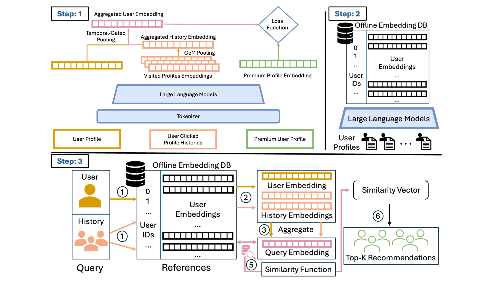
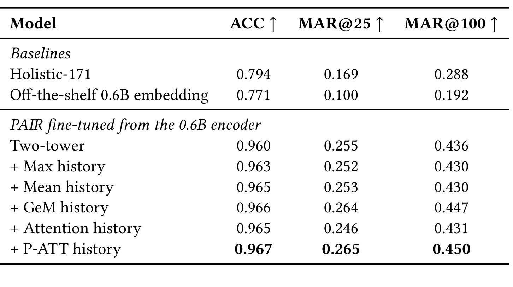
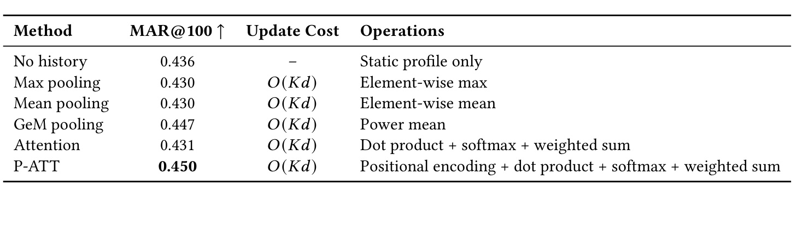
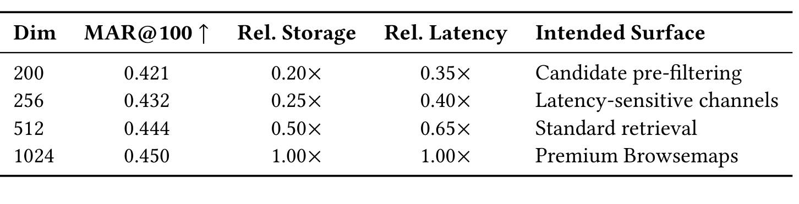
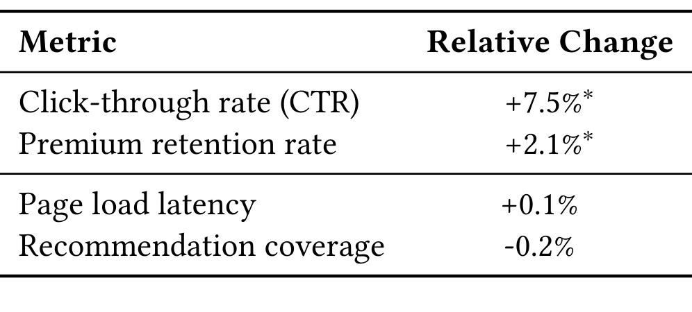

PAIR：面向 LinkedIn Premium 人脉推荐的偏好对齐意图召回
论文： PAIR: Preference-Aligned Intent Retrieval for Premium People Recommendation at LinkedIn
作者与机构： Zhongkai Shangguan、Yanbin Kang、Yihan Cao、Ruijie Jiang、Qiannan Yin、Chang Yue、Zijian Zhou、Girish Kathalagiri、Changshuai Wei、Zhengming Xing；PDF 首页作者均为 LinkedIn。
来源与日期： arXiv，2026-10-22 v1；精读记录 2026-10-26。
主类别： 推荐算法；次级方向为 LLM embedding、意图建模、实时个性化。
原始入口： arXiv:2610.30941。代码： 原文没有给出可核验的独立代码仓库；数据为内部生产日志。
1. 背景和问题
职业网络中，相关性往往来自互补意图，而非对称的履历相似性：求职工程师需要找到招聘者，而不是另一个履历相近的工程师。这是论文摘要和引言提出的具体错配，也决定了 PAIR 应当按推荐召回论文来读。它用语言模型编码结构化履历，但最终输出仍是用于向量检索的用户表示，研究目标是让召回空间服务于职业发现，而非提高通用语言任务分数。
履历相似性为什么会成为障碍？个人资料记录的是相对稳定的身份，如职位、行业、技能、教育和工作经历；职业行为则取决于当下任务。相同的工程师可以在某一周积极找工作，下一周寻找创业伙伴，再下一周寻找某个专业问题的同行。静态文本描述没有相应变化，期望看到的人却可能完全不同。通用语义编码器把两段工程师履历放得很近，是合理的语义行为；将这个空间直接用于人脉推荐，却未必能覆盖招聘者与求职者的互补关系。
论文面向的产品是 Premium Browsemaps，位置在会员个人页面上，展示可进一步浏览的 Premium 人选。产品既希望浏览者发现有价值的人，也希望被推荐会员获得曝光，形成个人主页访问和“谁查看了你的主页”等后续反馈，从而支持会员价值感知。这个目标比单纯的朋友推荐复杂：共同联系人与社会距离有意义，却不能替代明确的职业需求。论文没有把点击等同于完整的职业成功，只把它当作可规模采集的偏好观察，这一点决定了后面的实验结论应保留产品语境。
系统沿用两阶段架构，先召回、再排序。候选生成阶段可以使用地理位置、行业、资历和语言等轻量条件限定范围，向量表示进一步决定哪些候选进入排序器。召回错失的招聘者无法靠后续更强的排序器补回来，因此“排序模型已足够强”并不能消除这个问题。PAIR 选择在检索表示上重新学习目标，让候选池中首先出现符合当前意图的人。这也解释了为什么线上实验保持相同排序器：作者希望尽量把变化归到召回表示，但这仍是在完整产品约束下观察到的收益。
另一个背景是用户规模和更新频率。论文描述的系统服务数亿用户，会员点击历史持续发生变化。把自身履历与十个最近浏览资料拼成一长段文本，再让大模型每次重新编码，当然可以实现上下文交互，却会让意图变化与昂贵的模型推理绑在一起。工程上更合理的问题是：能否先用语言模型得到可复用的资料向量，再用小规模向量计算更新短期需求？这种切分允许离线管道承担文本理解，在线或准实时管道承担轻量状态更新，但也会损失文本级和序列级交互能力。
PAIR 同时面对表示预算问题。一个产品可以使用 1024 维向量追求质量，另一个产品可能需要 256 维来压缩存储与内存带宽。如果每个预算都训练独立模型，更新、回归、候选索引和版本管理都会增加成本。作者引入 Matryoshka 前缀训练，让同一个模型的前若干维分别可用。这里的动机不是宣称维度越小越好，而是使质量下降与资源节约之间存在可配置的关系，方便不同召回入口共用一个训练和部署体系。
监督数据同样包含限制。历史点击由既有生产召回和排序策略产生，未曝光的人没有相同的观察机会。用户点击某个招聘者、没有点击同屏另一个候选，最多说明在那次展示条件下存在相对偏好；它不能自动说明用户在所有可能候选中最喜欢前者。论文把这一点称为曝光条件下的偏好学习。这个名称有价值，因为它提醒读者标签依赖历史策略；但仅仅重新解释标签并不等于做了反事实校正，也不能令未点击变成可靠的负偏好。
因此，本文试图回答三个相互耦合的问题：如何把通用履历空间改造成职业偏好空间，如何以固定历史窗口的向量运算跟踪动态意图，如何在一套模型上覆盖不同向量预算。三个问题的答案分别落在数据与损失、历史表示、前缀训练上。阅读时需要区分它们的证据强度：主表显示任务偏好微调贡献最大，历史建模只带来其上的温和增量；降低维度说明共享模型可配置，但不能证明与生产基线所有计算条件完全一致。
还有两处原文不一致必须在一开始保留。方法章节明确把底座写为 Qwen3-Embedding-0.6B，而实验设置又称内部训练的 Qwen 架构 0.6B embedding 模型，二者具体继承关系没有展开；不能据此保证公开底座加本文步骤即可复现同样结果。更突出的是，论文将 MAR@100 描述为固定 100 候选池中的点击命中指标，却报告小于 1 的结果。按通常的单正样本全候选排序理解，这个数值不应如此，后文需要逐项分析。对这种疑点保持明确标注，比把工业论文的数字平滑转述成标准基准结果更重要。
在实验设计上，区分身份和意图还意味着不能只检查“相似履历被排到哪里”。合理测试应观察互补角色是否获得覆盖，以及这些候选是否带来更有价值的后续行为。本文使用真实点击构造监督，比手写角色规则更接近产品反馈；但没有单独公布求职者到招聘者、商务人员到客户等角色对的召回结果。因此这类互补例子主要是问题动机，不能说每个角色场景都被独立实验证实。系统是否真正识别短期求职状态，还是学习到稳定的跨角色点击频率，也需要时间和分群实验进一步区分。
这也是本文与一般相似用户推荐的重要距离。共享编码器并没有保证最终检索关系必然对称：查询侧额外引入了行为历史，候选侧仍是资料表示，两侧承担不同角色。但无历史双塔共享底座时，模型的非对称能力受到表示形式限制，监督可以移动向量位置，却不能凭空恢复未输入的当前目标。作者通过历史分支提供额外信号，是对这一信息约束的实际补偿，而不是仅靠偏好损失就能读出所有潜在意图。
2. 方法
2.1 曝光条件下的偏好对比学习
每个训练实例由查询用户、一个被点击候选和三个负例构成，正负比是 1:3。作者优先使用同一会话中已经曝光而未点击的人作为负例；不足三个时，再从曝光集合之外的活跃 Premium 会员中随机补齐。前者已经通过生产系统筛选，相对于完全随机会员，更接近系统实际需要区分的替代选项；后者扩大覆盖，避免监督范围完全局限于已展示集合。输入仍然是用户和候选的资料表示，输出是正候选相对于负候选的检索分数，而非自然语言回答。 给定最终查询向量和候选向量，原文式（1）的得分为：
温度控制候选分数进入 softmax 后的尖锐程度，实验固定为 0.02。原文式（2）把点击候选的概率推高：
符号解释：$q$ 是查询用户，$d^+$ 为点击候选，$d_i^-$ 为第 $i$ 个负候选，$s$ 为检索分数，$\tau$ 为温度。这里公式中的负例数记为 $K$，但后文历史窗口也用 $K$，两者不能混为一谈：当前数据实例有三个负例，历史长度取十。损失的计算形式与多负样本对比学习相同；区别在于正负监督来自真实曝光后的相对点击，而非只按向量距离挖掘近邻。PAIR 借鉴偏好学习视角，却没有显式参考模型、token 概率比或标准 DPO 的策略约束项。把本文称为“将 DPO 直接搬进 embedding”会误导实现，也会掩盖负例构造才是关键语义来源。
训练不需要额外参考模型前向，适合大规模向量召回。但损失仍然受到位置、曝光和点击噪声影响。生产召回器限定了可比较候选的支持集，随机负例补齐也没有消除这个条件。作者承认未来可通过探索感知的采样改善反馈循环；本文没有给出倾向评分加权或独立随机探索组。因此方法价值是实用的目标适配，不能被解释成已经解决日志推荐的选择偏差。
2.2 三塔表示与归一化相加
查询资料塔与候选资料塔共享编码参数 $f_\theta$，分别得到 $e_q=f_\theta(x_q)$ 和 $e_d=f_\theta(x_d)$。资料按标题、摘要、任职、教育、技能、证书、专利、荣誉、出版物及语言等字段序列化，使用章节标记连接并截断到编码器上下文。第三个塔消费近期点击者的预计算向量，形成历史意图 $e_H$。因此“三塔”不意味着在线执行三次大模型：历史塔的主体是向量聚合，资料编码可在批处理阶段完成。 相加之前，原文式（3）分别归一化两个分支：
原文式（4）再用可学习标量 $\gamma$ 调整历史贡献：
两个归一化步骤分别控制分支范数和最终检索向量范数。若只做原始向量相加，历史聚合的模长可能随行为分布改变，从而无意中控制分支占比。这里把混合强度集中给 $\gamma$，使静态身份和近期行为的相对作用更可控。候选向量也做 L2 归一化，以便余弦检索和向量索引使用一致的度量。原文没有完整说明空历史、极小范数以及冷启动时的边界处理，这些是迁移实现需要补齐的细节。

Figure 1 把训练、离线编码和检索分成三个区域：上方左侧是资料与历史共同参与训练，上方右侧是离线生成用户向量库，下方是按用户及其历史查向量、聚合查询表示并检索候选。图的主要作用是说明文本编码与在线意图组合的成本隔离。需要特别注意，图中历史路径标注 GeM pooling 与 Temporal-Gated Pooling，而正文主方法定义为位置注意力与归一化相加；本笔记按公式解释最终方法，不把图中的旧标签扩展成正文没有定义的新模块。这个图文差异也应列入复现时向作者确认的问题。共享资料编码减少重复计算，缓存历史向量让新点击可以通过数据库查询进入表示，但数据库读、缺失向量与版本一致性仍然属于实际服务成本，图示没有给出这些组件的详细性能分解。
2.3 查询无关的位置注意力历史
最近十个点击对象按新近顺序排列，最新点击位于位置一。每个对象已经有资料向量 $e_{h_i}$，位置向量 $\mathrm{PE}(i)$ 和一个全局可学习向量 $w$ 决定权重。原文式（5）为：
位置编码只参与打分，被加权求和的内容仍是点击对象的资料向量。权重没有使用查询用户的资料表示，因而同样一段历史可以独立于资料塔刷新。它学习的是跨用户共享的新近性和对象重要性规则，而不是针对当前查询对每个历史对象做条件化交互。这个限制降低了表达能力，却使状态刷新保持在固定窗口内的点积、softmax 和加权求和，不触发新的文本编码。
作者将复杂度写成 $O(Kd)$，其中 $d$ 为向量维度。所谓固定成本指窗口长度固定时不随全部历史累积增长，不意味着对 $K$、$d$ 都是数学上的常数，也不意味着新点击时可以只改一个向量分量：位置重排可能改变全部权重，需要重新聚合十个对象。对工业系统而言，这通常仍然远小于一次大模型前向，但它是有界的小计算量，不应被包装为任意规模下的零成本个性化。
2.4 多维前缀联合训练与服务切分
原文式（6）在多个前缀上共同计算同一种偏好损失：
训练迫使向量前部承担可用的检索信息，而不是训练结束后任意截掉尾部。服务时根据产品预算取前缀，无需再为不同维度训练独立编码器。200 维用于接近生产 171 维表示的存储尺度，但并非严格等维对照；256、512、1024 维分别对应逐步提高质量的配置。需要检查训练时前缀归一化、融合与候选索引是否和服务一致，原文未提供完整实现，不能假定任意已有模型直接截断都有相同性质。
最终，静态资料与候选资料走离线批处理，历史状态可按小时或准实时刷新，在线路径使用缓存向量和轻量聚合。训练和推理的差异非常明确：训练有点击标签、多负候选、多个维度损失以及全局参数更新；推理没有损失计算，也不要求把新历史文本重新送进 LLM。与此同时，资料变化仍需重新编码，新用户和新资料向量的可用性仍取决于批处理时效。论文选择这套切分，是以有限的序列表达能力换取可预测服务成本，而不是证明复杂序列模型没有价值。
3. 实验结果
3.1 内部数据、训练条件与可比边界
数据来自 Premium Browsemaps 的生产日志，按时间切分，训练交互早于测试交互。训练集包含 209K 查询级实例、涉及 4.4M 个不同会员资料；测试集包含 11.8K 查询级实例、涉及 93K 资料。这里的不同会员包括查询、候选和历史用户，因此不能把 4.4M 误写成训练正例数或活跃查询数。一个实例有一个点击正例和三个混合负例，缺少资料信息的会员被过滤。时间切分避免直接使用未来交互，但不自动排除历史特征拼接、资料更新时间或同一用户跨集合的其他泄漏路径，原文没有给出足够细节逐项复核。
模型使用八张 GPU、DeepSpeed 和 bf16。作者称预实验中 fp16 出现梯度溢出，因此报告结果统一使用 bf16，并采用带 warmup 的余弦学习率调度和梯度累积。正文未提供 GPU 型号、具体学习率、完整批大小、训练时长和搜索预算，不能从“八卡”推算总训练费用。论文贡献清单提及温度敏感性与混合精度稳定性，但可读主文没有对应完整扫描曲线，实际已披露证据是固定温度 0.02 以及 fp16 溢出的经验说明。
比较基线包括生产 Holistic-171、未做任务微调的 0.6B embedding，以及从相同 0.6B 编码器微调的 PAIR 系列。Holistic-171 本身已经利用资料和行为，面向多个 LinkedIn 互动目标训练，并不是无行为的弱基线；其维度是 171，与 PAIR 默认 1024 维不同。因此跨模型差异同时包含监督目标、容量和表示维度等因素。同底座的未微调与微调版本更能说明领域偏好监督价值，而不同历史聚合版本更能分离历史机制的增量。
3.2 主结果与 MAR 定义矛盾

Table 1 中 Holistic-171 的 ACC、MAR@25、MAR@100 分别为 0.794、0.169、0.288，未微调 0.6B 分别为 0.771、0.100、0.192。PAIR 无历史双塔对应 0.960、0.255、0.436；加入 P-ATT 后为 0.967、0.265、0.450。作者报告相对生产模型约 56% 的 MAR@100 提升，对通用底座约 2.3 倍。更有解释力的是中间的无历史结果：0.288 到 0.436 已贡献大部分增量，而 0.436 到 0.450 只再提高约 3.2%。因此主要经验是任务监督塑造空间，不能把全部收益归给历史塔或位置注意力。
ACC 的定义清楚：在一正三负四个候选中，被点击候选的分数是否最高，随机基线为 0.25。微调后的各模型都在 0.96 以上，这个任务接近饱和，只能说明容易的四候选判别有效，无法代表海量召回。值得观察的是，Max 和 Mean 的 ACC 分别为 0.963、0.965，略高于无历史的 0.960，但作者报告的 MAR@100 都反而下降到 0.430。这提醒工程复现不能只盯小候选准确率，不同候选规模和排序截断点可能揭示完全不同的问题。
原文 MAR@100 的指标定义存在未解决矛盾，数值可按作者报告引用，但不能当作已核验的标准 Recall@100。第七页说 MAR@k 衡量点击候选是否进入固定 100 候选池的前 k 位。若正例就在这个完整池内，且只是对这 100 个对象排序，取前 100 个应该覆盖全部正例，按通常命中/召回定义就应为一。表中却出现 0.192、0.288、0.450，说明池规模、正例覆盖方式或“Mean Average Recall”的实际计算还有未披露环节，也可能是描述错误。本文没有给出公式、评测代码或进一步解释，不能替作者猜一种定义再把矛盾消掉。
这个问题不直接否定同一私有评测中报告的排序顺序，因为所有模型使用相同候选池；但它显著限制绝对值解释和跨论文比较。若要复现，应先要求作者说明每个查询的正例集合、候选集合、检索全集、k 的含义、聚合规则及缺失正例处理，再把指标写成可执行测试。否则用公开数据得到 0.45 既不能说明成功，也不能说明失败。这里应优先报告“作者报告指标”与具体定义缺口，避免给用户留下全库召回率已达 45% 的印象。
此外，主结果没有报告不同随机种子下的波动。0.003 或 0.014 这样的绝对差值是否稳定，需要配对重采样或重复训练辅助判断。本文据原表陈述顺序，并保留作者报告的相对增幅；不会将未提供显著性证据的离线差距直接解释成稳定的因果贡献。
3.3 历史聚合的收益与负作用

Table 2 将历史窗口统一固定为十条，向量维度统一为 1024，各方法都使用预计算资料向量，因此都不需要随历史更新重新执行 LLM。无历史是 0.436，Max 与 Mean 都为 0.430，GeM 是 0.447，普通注意力是 0.431，位置注意力为 0.450。不能据此简单说“attention 明显优于 pooling”：普通注意力反而弱于无历史，GeM 与 P-ATT 仅相差 0.003，且原文没有为这个离线差异提供重复训练方差或置信区间。位置顺序有帮助是合理解释，但尚不构成显著性已验证的普遍定律。
这些结果对用户意图建模的启发是，历史信号也可能污染当前查询。均值可能把多个目的平均掉，最大池化可能保留不适合余弦检索的分量组合，普通注意力也未必学到合适的新近规则；这些是机制层面的可能解释，而非论文做过逐项归因的实验。已被实验直接支持的是：同一数据和评测下，部分朴素历史融合没有提升，谨慎的聚合设计比“加了历史”本身更重要。对于历史稀疏、目的频繁变化或不同行为强度混合的场景，还应单独分桶评估，主文没有提供这样的细分。
成本列全部写作 $O(Kd)$，并列明最大值、均值、幂均值、点积、softmax 等实际操作。这个比较给出的是渐近量级和运算类别，没有提供各聚合的微秒延迟、缓存访问次数或 CPU 利用率。因此可以说这些方法在固定窗口下都适合轻量更新，不能声称 P-ATT 的真实耗时与 Mean 完全一样。尤其位置注意力有指数与归一化，向量库缺失和远程读取可能比算术更占时间。原文线上护栏可以证明整套部署没有观察到明显回归，却不能替代聚合算子的独立性能测试。
3.4 一个模型覆盖多个维度预算

Table 3 的 200、256、512、1024 维分别报告 MAR@100 为 0.421、0.432、0.444、0.450；相对存储为 0.20、0.25、0.50、1.00 倍，相对延迟为 0.35、0.40、0.65、1.00 倍。它们来自同一个联合训练模型的不同前缀，所以支持“一个模型服务多预算”这一主张。256 维仅为全维四分之一的向量存储，指标仍接近完整表示；512 维则在一半存储下仅损失 0.006。这个趋势值得借鉴，但 MAR 的绝对口径问题也贯穿此表，不能把这些数值直接映射到另一个检索系统。
存储比主要反映向量维数关系，不包括索引结构、资料文本、缓存元信息和版本冗余。原文说明相对延迟基于随维数变化的检索成本以及固定服务开销，未给出完整的测量硬件和绝对时间。因此“256 维延迟为 0.40 倍”只能在作者定义的比较中成立，不能改写成任意端到端推荐请求提速 2.5 倍。200 维约接近生产 171 维的存储尺度，也并非精确对齐；它仍优于生产指标有助于排除“所有收益只因维度变大”，却不足以单独隔离训练目标、网络底座与数据差异。
3.5 在线 A/B 的收益、护栏与未披露项

Table 4 中实验组使用 1024 维、P-ATT 历史的 PAIR，对照使用 Holistic-171，两组保持相同下游排序器，按用户分流，并按订阅层级和活动程度分层。点击率相对提高 7.5%，Premium 留存率相对提高 2.1%，两项带有生产实验体系的显著性星号；页面加载延迟相对变化 +0.1%，推荐覆盖率 -0.2%。星号表示作者的内部显著性判定，不代表本文能够复核具体检验，因为原文未披露样本数、实验时长、置信区间与 p 值，也未给出留存观测窗口。
这里的百分比都是相对变化，不是百分点。例如留存率增加 2.1% 并不意味着从某个基准直接上升 2.1 个百分点，原始留存率未披露，不能反推绝对增量。线上收益小于离线作者报告的 56% 是正常的链路现象：新增候选仍需经过排序、展示和用户选择，召回指标改善不会等比例转成点击。正因为排序器相同，这组实验有助于观察召回替换的产品贡献；但实验同时替换偏好表示、历史和维度配置，不能单独把 CTR 收益归到任一模块。
作者明确只在 Premium Browsemaps 验证，并承认更长期的订阅影响、其他推荐场景、召回排序联合优化和更系统的负例比较仍待研究。线上数据比单独的私有离线指标更接近真实价值，但缺少实验细节使外部读者难以判断稳定性、季节性与分群差异。合适的结论是：作者报告这套部署改善了该产品内的点击与留存，且护栏没有可测的明显回归；不应扩展为所有职业匹配任务都获得同等提升，更不能由点击推断招聘成功、公平性或长期职业收益。
4. 总结
PAIR 最有用的贡献是把职业召回的目标、表示更新和服务成本同时摆到台面上。用语言模型获得资料语义只是起点，真正让空间适合产品的是曝光日志中点击与未点击的相对监督；静态身份和短期行为分离，使意图刷新不再要求重新编码全部文本；多前缀训练则把不同向量预算纳入同一套模型。实验的主要提升来自偏好微调，历史位置注意力提供较小增量，这一归因比模型名称中的“三塔”更值得带回工程实践。
对推荐系统，可以优先复现同底座、同数据的任务微调，再评估是否值得加入动态历史。把已有线上曝光作为真实难例来源有实际价值，但需要同时保留随机负例、采样元数据和位置偏差信息，避免把生产策略的盲区固化。对大模型应用，这个工作说明“预计算语义向量加轻量状态”可能是一种可控的个性化方式，适用于候选检索或个性化 RAG 的用户记忆；它没有证明可以替代需要复杂因果推理、多兴趣分解或文本级证据组合的 Agent 记忆系统。
需要保留的局限至少有五项。第一，私有数据和完整训练配置未公开，可复现性有限。第二，曝光条件偏好继承历史策略偏差，未点击不等于不喜欢。第三，固定十条历史和查询无关权重可能混合不同目标，缺少按历史长度和意图变化速度的细分证据。第四，MAR@100 的定义与固定 100 候选池矛盾，绝对指标不能作标准召回率使用。第五，线上只在一个付费会员产品验证，留存窗口、样本量与长期效应未披露，不能直接推广到非会员、人岗匹配或其他业务。
原文还存在图文与模型描述不一致：Figure 1 保留 GeM 和时间门控标注，而正文主要方法是位置注意力和归一化相加；方法章节点名公开 Qwen3 底座，实验章节又描述为内部训练模型。这些不是读者应当自行补齐的小实现差异，因为它们直接关系训练图和初始化条件。复现时应将问题集中成可回答的清单，优先联系作者澄清，避免把自选实现的结果冒充论文复现。服务层还需关注资料向量更新、历史缺失、无历史退化、隐私授权和热门会员曝光聚集，论文没有逐项给出治理结论。
后续工作可以分三步推进。先把 MAR 的计算代码、候选全集与正例定义核实，再建立可重复的公开或内部评测；接着用随机负例、仅曝光负例、混合负例和挖掘负例做控制实验，把监督来源从架构增益中剥离；最后比较无历史、GeM、P-ATT 与查询条件注意力，在同等 CPU 预算下记录质量、更新耗时、数据库读取与陈旧程度。多维前缀实验也应补齐绝对延迟和索引内存，才能决定不同入口实际使用多少维。
若用于自己的系统，建议以保守的切换路径验证：先保持排序器与流量规则稳定，观察候选覆盖、点击、后续高价值行为及错误率，再研究召回排序联合调整。这里的“保守”不是降低研究目标，而是让每次变化有可解释的对照。PAIR 提供了一套值得试验的工业设计，但其最可信的迁移结论是如何组织监督和计算路径，具体提升幅度仍需在新的数据分布、意图结构与评测口径下重新证明。